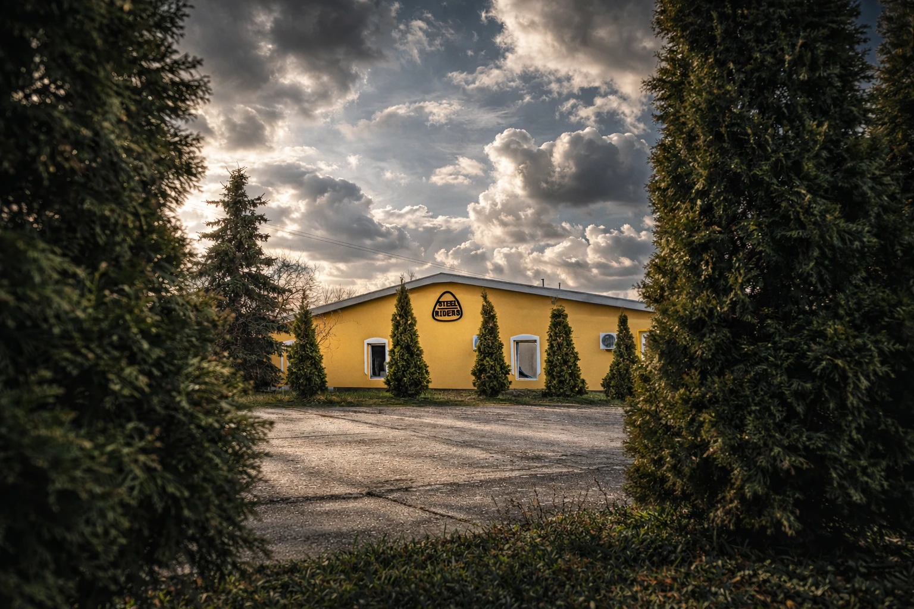
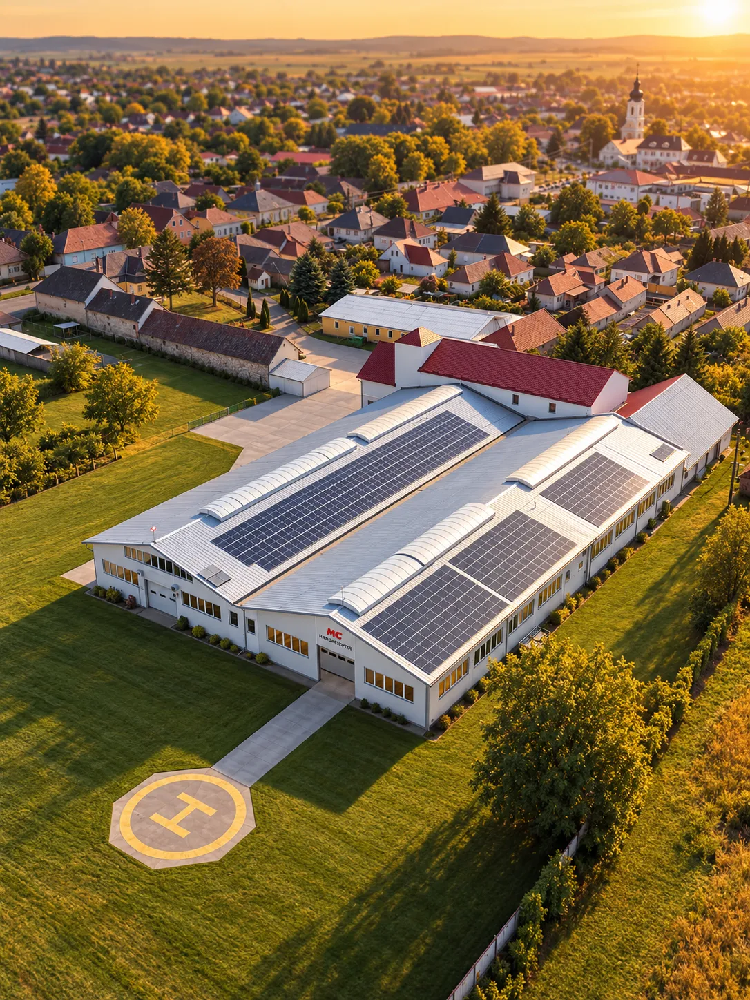
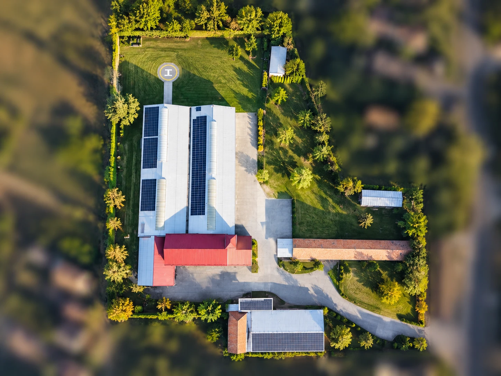
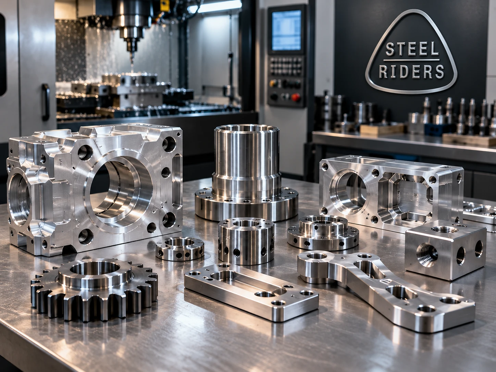
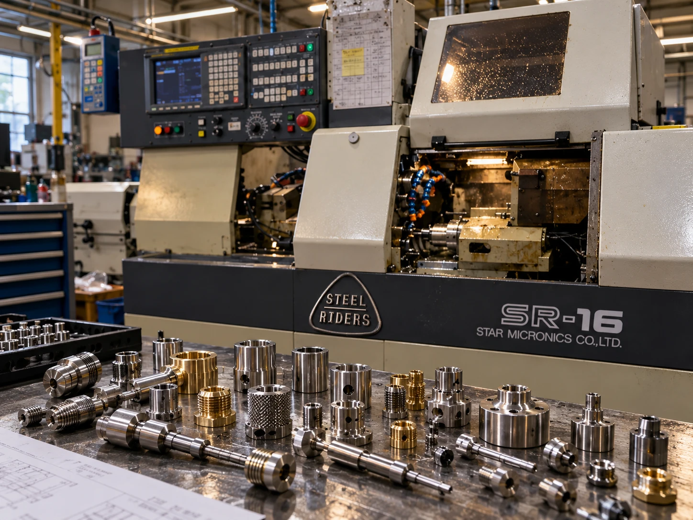
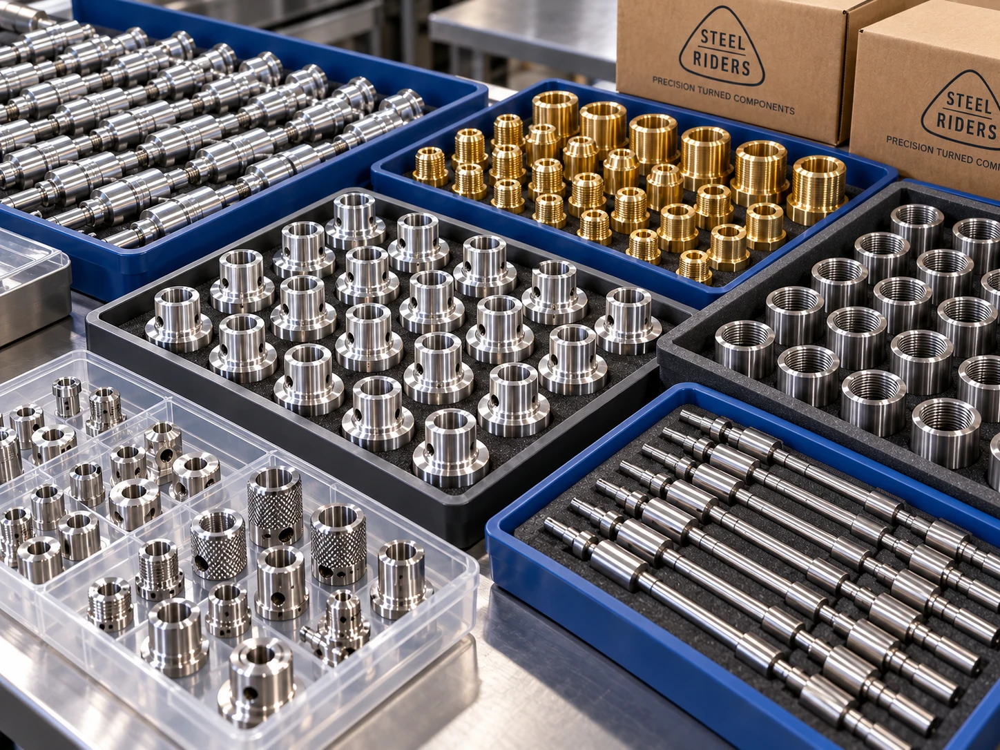
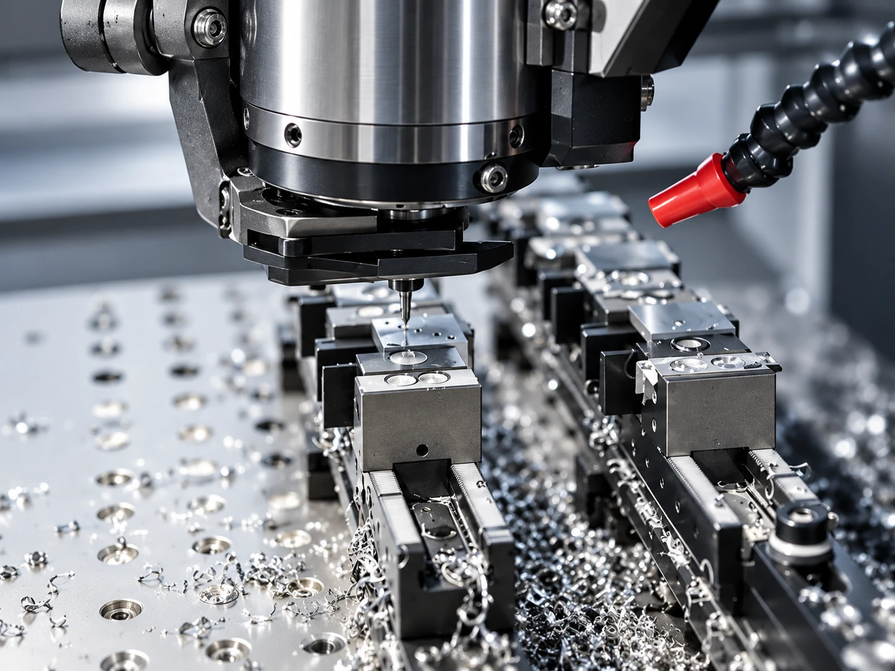
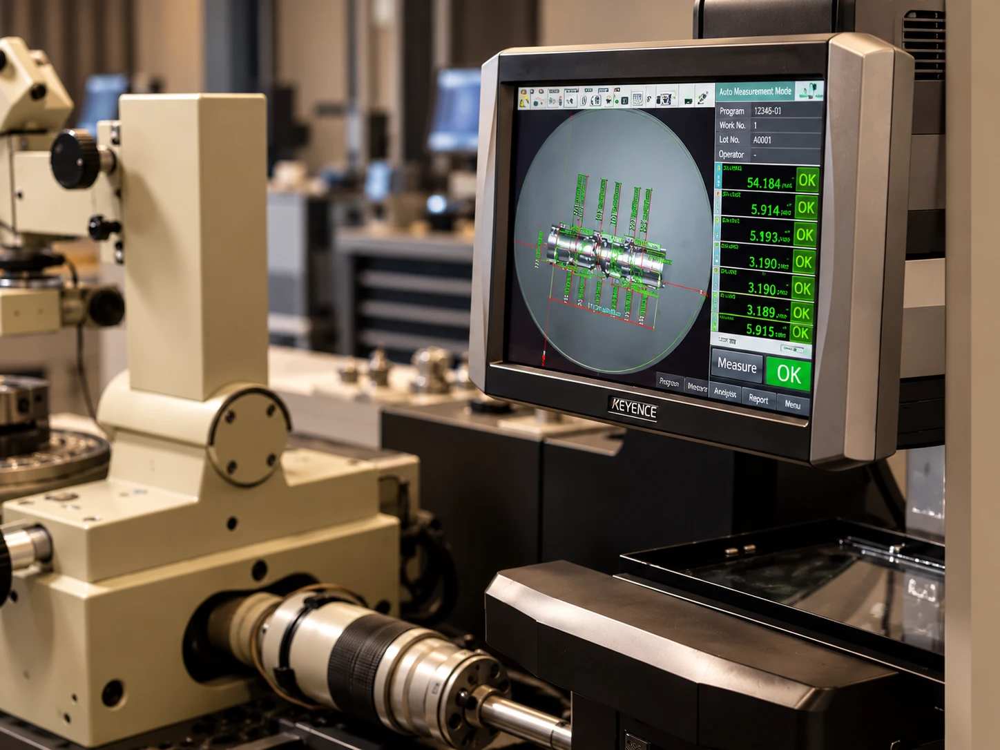
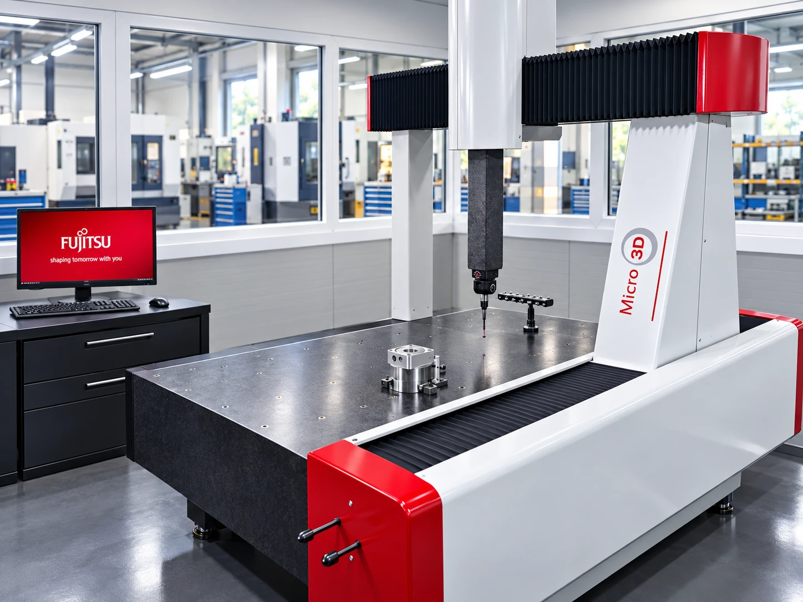
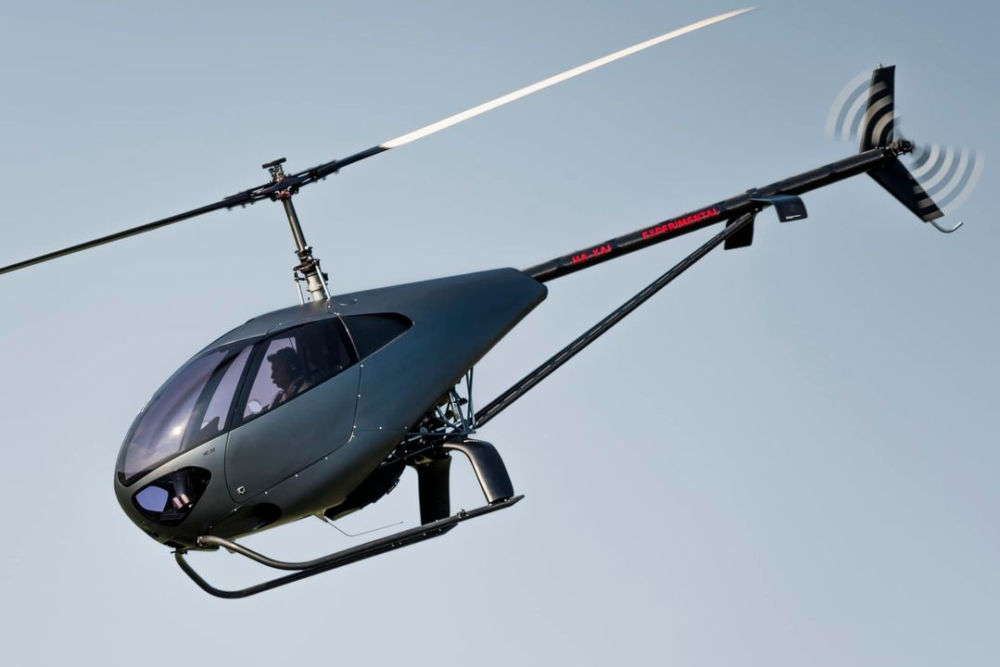

Machines on one site
CNC automatic and sub-spindle lathes, vertical machining centres, NC and conventional machines, grinders – the whole process chain in-house.
CNC machined metal components · since 1997
More than 20 years in the supplier market and 70,000,000 parts sold. Medium and large series of turned and milled components for electronics, automotive and pneumatics – from raw material to delivery.
Our machine park
The company
We are customer-centric. We strive to ensure that our work is of the highest possible quality, delivered on time and meets customer requirements in every respect.
We started in 1997 as a family business with 3 people in a 200 m² workshop in Verpelét. Today 50 employees produce in 3 shifts on our own 27,000 m² site – covering the whole process for our partners, from raw material sourcing to delivery of the finished product.
Our history

Our site
Two production halls, solar power generation and our own helipad – everything for production and delivery in one place, between Eger and Gyöngyös.

From our production
Housings, flanged bushings, shafts, valve components – milled and turned in aluminium, steel and brass. Click the markers for details.


Why Steel Riders?
More than 20 years in the supplier market and 70,000,000 parts sold – from drawing to delivered component.
CNC automatic and sub-spindle lathes, vertical machining centres, NC and conventional machines, grinders – the whole process chain in-house.
Continuous, plannable capacity for medium and large series with scheduled deliveries.
ISO 9001 and ISO 14001 systems, in-house measuring room, SAP-based traceability.
From material sourcing to delivery – lower logistics costs and one accountable partner.

Delivery
Every batch passes final inspection before it leaves the plant. Parts are packed to customer requirements and protected from damage – in trays, bags or custom packaging.
Activities
Our production is built on 24 CNC lathes and 11 machining centres, complemented by NC centre lathes and conventional machines.
Component production on CNC automatic and Swiss-type lathes, with a focus on aluminium, brass and plastic parts.

Milling, drilling and threading of prismatic parts and secondary machining of turned parts on 11 vertical machining centres.
Finish machining of raw castings: datum faces, fits, bores and threads in series.
DetailsMetalworking on conventional machines; custom, small but geometrically complex, heat-treated and ground machine parts, tools and machine assemblies; prototypes and small batches.
Details

Metrology
In our own measuring room, first articles and series samples are checked with a 3D coordinate measuring machine and an optical measuring system.
Industries
In small and medium series we have made components for almost every field of industry.
Working with us
Based on the drawing (PDF), 3D model (STEP), annual quantity and material grade.
Manufacturability, process and machine selection, lead time.
Unit price, tooling and fixture costs, delivery terms.
First samples with inspection report.
Scheduled production in 3 shifts with in-process inspection.
Final inspection, packaging and delivery.

Aerospace
We manufacture the first Hungarian-designed and built two-seat helicopter as partner of Hungaro-Copter Kft.
The helicopter projectRequest for quotation